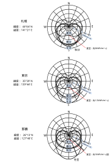

2021年
問題91 建築物と日射に関する次の記述のうち，最も不適当なものはどれか．
（1）夏期における建築物の日射受熱量を減少させるには，東西の壁面・窓面はなるべく小さくする方が有利である．
（2）直射日光は天気によって大きく変動するため，昼光を照明として利用する場合は，天空光のみを利用する．
（3）内付けブラインドの日射遮蔽効果は，50％程度しか望めない．
（4）夏至の日の南壁面の日積算日射量は，低緯度に位置する那覇の方が東京より大きい．
（5）ライトシェルフとは，部屋の奥まで光を導くよう直射日光を反射させる庇のことである．
2021年
問題91 正解（4） 頻出度AAA
夏至の南壁面の日積算日射量は緯度の高い東京の方が那覇より多い．
日積算日射量とは，その場所の刻々の日射量を日照時間にわたって積算したものである．
刻々の日射量は，太陽位置（高度＝迎角，方位）の移動に伴って変化し，南中時の南壁面の受ける日射の強さは，太陽高度を\(h\)とすれば(法線面の受ける日射の強さ)×cos\(h\)となる．
夏至の太陽高度は，(90°－その場所の緯度＋23.4°)なので，南中時の東京（北緯36°）の太陽高度は，90－36＋23.4＝77.4°．那覇（北緯26°）の太陽高度は90－26＋23.4＝87.4°．cos77.4°＝0.22，cos87.4°＝0.05なので，夏至の南中時に限れば，東京の南壁面受ける日射は，那覇のおよそ4倍の強さとなる．
日照時間も，北半球では春分から秋分の間は緯度の高いほうが長い（夏至には東京が那覇よりおよそ50分長い）．
2021-91-1図は札幌，東京，那覇の方位別日積算日射量を示したものである
2021-91-1図 札幌，東京，那覇の方位別日積算日射量

出典 公益社団法人 日本建築衛生管理教育センター
「新建築物の環境衛生管理第2版第1刷」上巻171頁 図3-4-5(1) を基に作成
那覇の南（S）壁面の夏至の日積算日射量は1kWwh/(m2･day)を少し下回るが，東京では約1.5kWwh/(m2･day)，札幌では約2kWwh/(m2･day)となることが分かる．
-(1) 2021-91-1図から，夏季は東西壁面の日射受熱量が多いので，できるだけ受熱量を減らすように東西の壁面・窓を減らすように，同じ容積なら東西に長い建物（東西を軸とする建物）が良い．特に西面は，日射が当たる時刻に建物内外の温度が高くなっているので西日対策は重要である．
冬場は太陽高度が低いので，日射を多く取り入れるためには南面が長い方が良い．すなわち，夏冬とも，温熱環境的には東西を軸とする建物が有利となる．
-(3) 外付けブラインドの場合は，80％の日射遮蔽効果がある．
-(5) ライトシェルフは2021-91-2図参照．
2021-91-2図 ライトシェルフ
左側の写真 出典 アルフィン株式会社
https://www.alfin.co.jp/products/alprism/